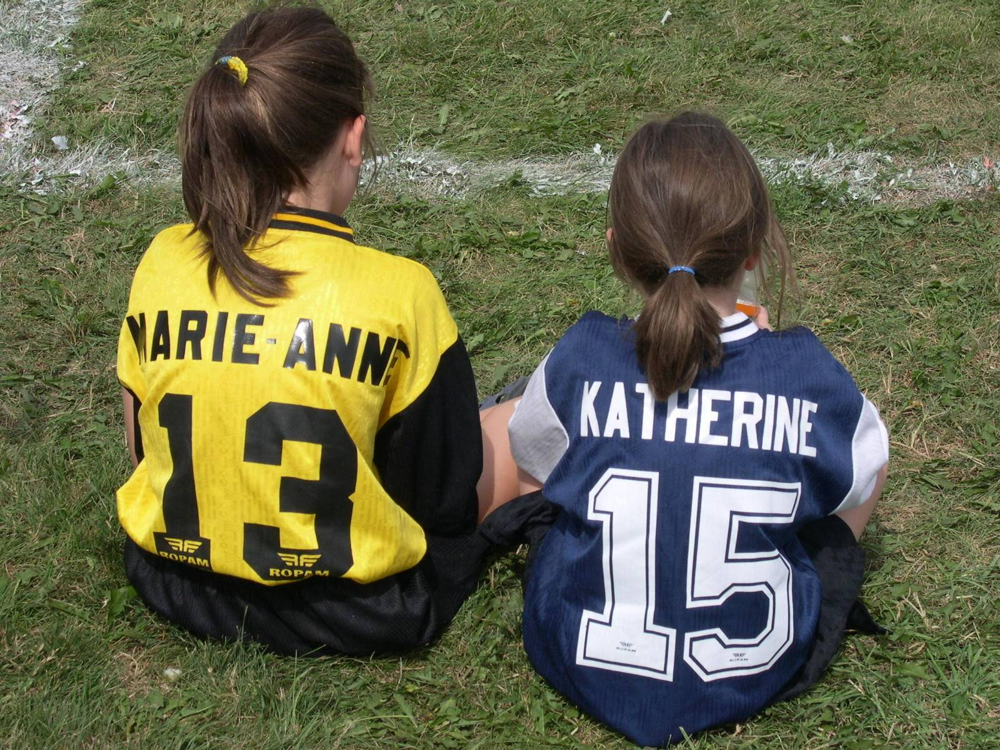
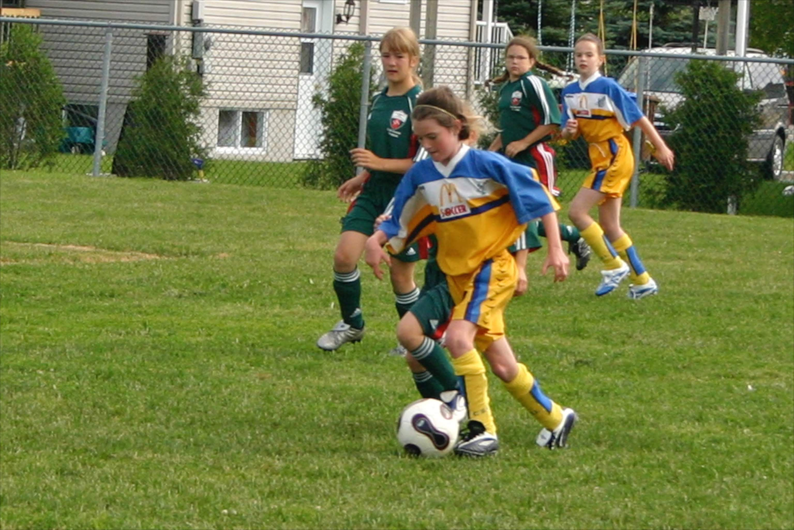
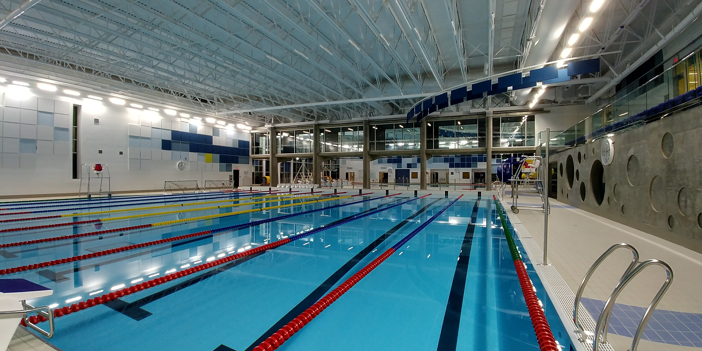
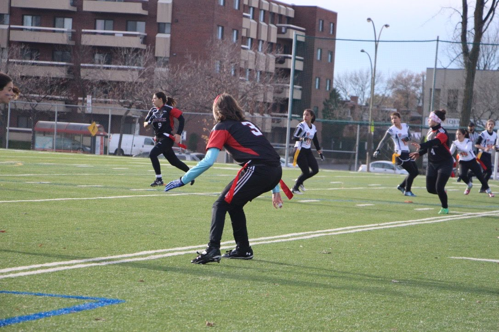
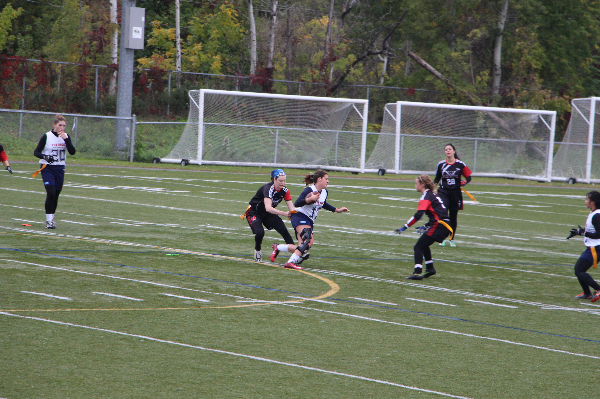
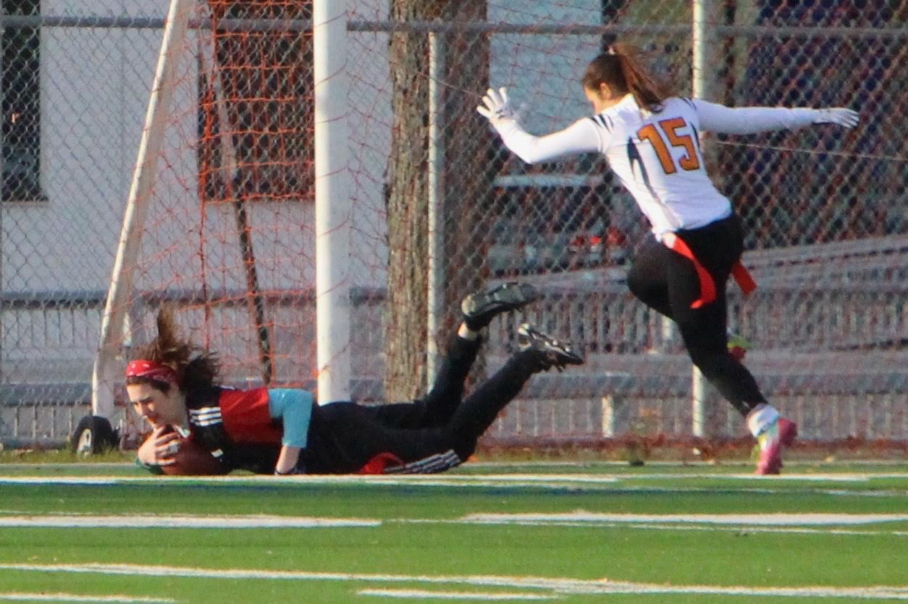
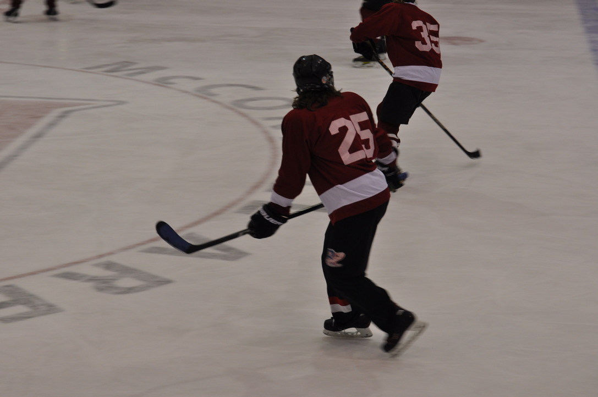
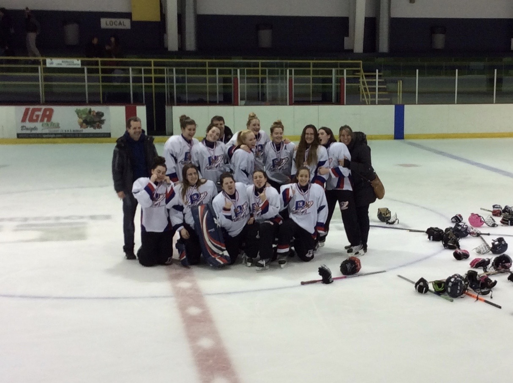
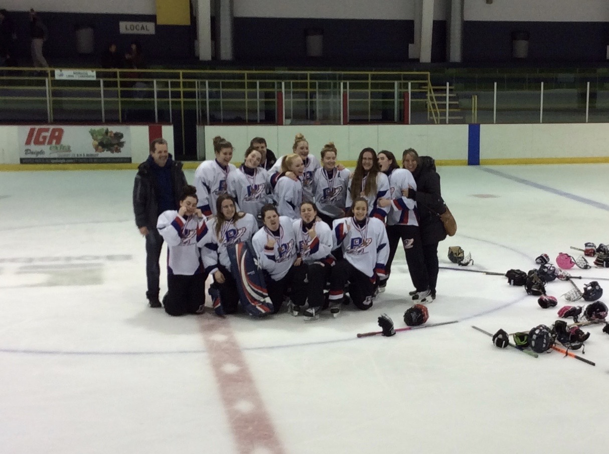
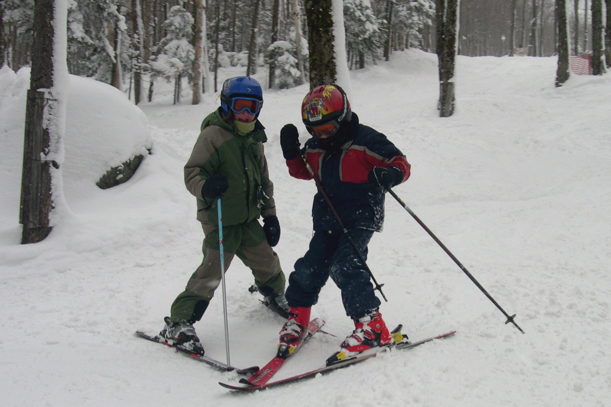

My Hidden(?) Talent
I have always been a very active kid. Sports have always been a part of my life. Ever since I can remember, I was practicing one, or more, sports at a time. I don't know what it is, but I have always been more interested in organised sports than just simply working out or running. It must be because I trick my brain into thinking its a game and not a workout! COVID has made that much harder to do...
I think it started with soccer. My mom registered us at a very young age. I started out in the youth league, but over the course of the next six years, I evolved and joined the intercity league competing against different cities accross my region. We had many games and practises a week. Here are 2 pictures of me playing soccer at different ages:
 {kind=link}
{kind=link}
After soccer, I started swimming. Swimming for me has some sort of therapeutic value if one can say that. No matter what I am feeling, no matter how frustrated I am about something after swimming its like if whatever I was worried or frustrated about before seems less important. I was part of a competition team for a while but now I just swim for the fun of it. I actually became a lifeguard and swimming instructor for 6 years. This is a picture of the pool I worked at:
{kind=link}
The timeline of which sport was done when gets a little blurry here. Throughout high school (grades 7 to 11 for non-Quebec people) and all through CEGEP (grades 12 and first year of Uni for non-Quebec people) I played flag football. I was the quarteback in high school and switched to defence once in CEGEP. I was known for my aggressivness (all while staying within the rules). I continued playing flag football a little in the intramurals at university.
  {kind=link}
{kind=link}
{kind=link}
Another sport I played was ringuette. Ringuette is very similar to ice hockey. The stick is a little different in the sense that there is no paddle. And the puck, that is replaced by a ring. You control it by putting your sitck in the inside of the ring. I played ringuette for 3 years as a child, stopped for 3 years and then started again because I missed it too much. There is something about being on the ice, skating on metal blades that makes sports just funner. After playing for another 3 years I had to stop again because there was no more team for me to play in. I therefore joing the McGill intramural hockey team and I LOVE it. Even if our all girls team play against must stronger and more experienced guys, I never come back from a game disapointed. On top of that, its one heck of a workout! Here are some pictures:
 

{kind=link}
Finally, probably the only constant sport in my life has been skiing. Almost as soon as I could walk, my parents started me in skiing. Every winter we would go to different mountains and ski for the day. Ten years ago, I also started snowboarding. Although now with university I may not hit the slopes as much as I may want, I still love the feeling of flying down a mountain on skies or a snowboard. Below is a picture of me with my best friend as kids, my forever skiing budy:
{kind=link}
I have also dabbled in other sports like volleyball and badminton, but they never really stuck.